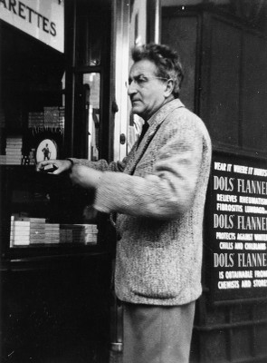
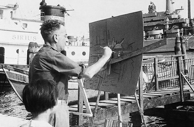
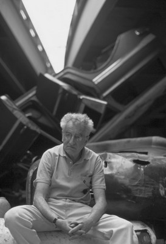

Biographie VARLIN
VARLIN (Willi Guggenheim)
*16.3.1900 Zürich, †30.10.1977 Bondo (GR).
Varlin schrieb diese Autobiographie für den Ausstellungskatalog der Basler Kunsthalle 1967. Von dieser Fassung existiert ein Exemplar mit handschriftlichen Korrekturen Varlins. Diese korrigierte Fassung wurde gekürzt in der von Hugo Loetscher 1969 herausgegebenen Monographie veröffentlicht. Der vorliegende Text enthält die ausführliche Fassung und berücksichtigt Varlins Korrekturen.

1900
Mich erblickte das Licht der Welt am 16. März. Als Fisch geboren, mit einer Zwillingsschwester in Zürich an der Schützengasse, bis 50 knochenStier, war mit 4 Sternzeichen die Voraussetzung für ein kommendes Genie gegeben. Als Säugling werde ich wie meine Tochter auf meinen Bildern ausgesehen haben, satanisch schreiend, mit den dazugehörenden Gerüchen. Später die ersten Schritte in den Raum, das Hineinlangen in tiefe Schachteln, Verschwinden in dunklen Kleiderkästen, die Entdeckung der dritten Dimension, von den modernen Flachmalern ignoriert. Als ich 12 Jahre alt war, starb mein Vater, 2 Monate vorher meine ältere Schwester. Übersiedlung mit der Familie nach St.Gallen. Von St.Gallen ist nichts zu melden. Z'Sänkt Gällä isch äll schö Wättär. Kantonsschule, Gewerbeschule, eine 1 1/2jährige Lehre in der Lithographenanstalt Seitz. Umgang mit den pergamentleichenfarbigen, sich auch kalt wie Leichen anfühlenden Senefelder-Steinen. Manet, Daumier, Gavarni, Toulouse-Lautrec, Steinlen erweckten diese Leichen zum Leben. Ich, der Stift, musste stumpfsinnige Schriften auf die Steine zeichnen, sie dann in die Druckerei schleppen und Fehldrucke mit spitzem Pinsel auspinseln. Ich erinnere mich, an einem schlechtgedruckten Glanzlicht im Zwicker des damaligen amerikanischen Präsidenten Woodrow Wilson (wir sind am Ende des Ersten Weltkrieges) tagelang gepinselt zu haben. Geschworen, Zeit meines Lebens nie mehr eine Lithographie zu machen; Schwur mit wenigen Ausnahmen gehalten.
1921
Mein Sprung nach Berlin. Schüler bei Orlik an der Staatlichen Kunstgewerbeschule. «Könnense auswendig een Ohr zeichnen? Keen Mensch kann det. Georg Grosz hat bei mir Hunderte von Ohren jezeichnet. Gehnse mal zu Cassirer, dort sind die ersten Zes Annes ausjestellt. Mir is er zu schummerisch. Wat, Sie verlassen uns schon wieder! Wohin fahrense denn? Nach Paris. Von Ihnen weess ick heut noch nischt, könnense wat oder könnense nix?
1923
Paris. 11 Jahre geblieben. Meine Hotels mit und ohne Wanzen. Rue Tournefort, rue Vaugirard, rue Bourgeois, rue St-Jacques, rue Vercingétorix.
In die Académie Julian eingetreten.
1926
Die Mutter verliert das Vermögen. Die Erkenntnis, dass Kunst brotlos ist, etwas verdienen zu müssen. Ich trete in die Weltfirma Risacher, Faubourg Montmartre, ein. Werde dort wieder ausgetreten. Grund: «Vous êtes même pas capable de tailler un crayon.» Zeichnungen für humoristische Zeitungen gemacht, wie «froufrou», «Ric-rac». Kommt weniger darauf an, ob schön als vielmehr obszön.
Am «Salon des Humoristes» ausgestellt.
1929
Ein Atelier an der rue de Vanves gemietet. Ein Bild auf der Staffelei aus jener Zeit. Eine Couch auf Zementboden. Ein Grammofon mit Trichter «His Master's Volce». Im Hintergrund eine lausige Zahnbürste in einem Glas.
Auf dem Bild des Schlafzimmers von Van Gogh in Arles sind sauberere Bettdecken abgebildet, ein schön gefaltetes Handtuch an der Wand. Ich habe mir mein Ohr nicht abgehauen.
1930
Ich finde auf dem Nachthafen einen Zettel: «On l'a couvert. Cela sentait trop mauvais.» Signiert: Leopold Zborovski, der Modigliani und Soutine entdeckte und es jetzt ausgerechnet auf mich abgesehen hatte. Vertrag mit Zborovski.
Er zeigte mir eine Foto, Zborovski zum Verwechseln ähnlich; es war aber nicht er, sondern das Bildnis eines französischen Revolutionärs, der mit Courbet die Vendôme-Säule umgestürzt hatte. Zborovski fand, dass ich mit meinem guten bürgerlichen Namen Guggenheim, dem Namen amerikanischer Kunstmagnaten und Pariser Rennstallbesitzer, keinen Erfolg haben werde, ich zudem ja eine humble Welt in meinen Bildern schildere. So kam ich nicht nur zu einem Namen, sondern schon bei Lebzeiten zu einer Strasse in Paris.
Zborovski mietet mir ein Atelier im Künstlerrundpavillon, la Ruche, wo Archipenko, Soutine, Chagall und Léger gehaust haben.
1 Jahr in Cros-de-Cagnes in Südfrankreich gelebt.
Ausstellung in der Galerie Sloden, Faubourg St-Honoré, des Erfolges wegen verlängert.
1932
Zborovski stirbt.
1933
Hitlers 1000 Jahre beginnen.
1935
Rückkehr mit Mutter und Schwester an den sichern Busen der Mutter Helvetia. Wir mieten eine 3-Zimmerwohnung an der Seestrasse in Wollishofen, überlegen uns, gleich wieder auszuziehen, bleiben dort 35 Jahre. 2 Jahre lang die Wohnung als Atelier verwendet. Die Ensor-Einrichtung, das falsche Renaissancebuffet, das schwarze Klavier mit den Jugendstilkerzenständern. Auf der Kommode den geschnitzten Brienzerhirsch, die japanischen Vasen mit Farbe bekleckst. Der zerlauste Perserteppich, einmal im Hof auf die Stange gebracht, erzeugt beim Ausklopfen eine Sonnenfinsternis. Ein Brief von der Liegenschaftsverwaltung: «Falls Sie weiterhin solche Teppiche ausklopfen, wird Ihnen gekündigt.»
1936
Ein Atelier, im «Venedigli» , einem Abbruchobjekt ohne Treppengeländer, mit kartonverklebten Fenstern, gemietet. Mit mir hausen dort die Maler Leo Leuppi, der Däne Olsen, Gusti Vogt, der Bildhauer Louis Conne, die zu früh verstorbenen Bildhauer Hans Hippele und Meinrad Marti. Unsere stadtbekannten, an Plakatwänden angeschlagenen DI GANA DU-Bälle (soll heissen: die ganze Nacht durch). Ein einmal in Betracht kommender Käufer entfernte sich rückwärts, als er zwei für des Verwalters Hunde bestimmte Kalbsaugen vor meiner Türe fand.
1937
Beim damaligen Kunstpapst Papa Righini reklamiert, dass ich das Bundesstipendium nicht bekommen habe, obschon ich einen so schönen Rückenakt von hinten eingesandt habe. Righini: «Ich habe zwar noch nie einen Rückenakt von vorn gesehen.»
Im nächsten und den zwei folgenden Jahren erhalte ich das Bundesstipendium.
Abbruch des Venedigli.
Ich miete mir eine Bauernstube als Atelier, die dunkel wie ein Kuhmagen ist.
Die Kunst, wenn man nichts hat, sich mit primitivsten Freuden zu begnügen, zum Beispiel: eine Seife in der Badewanne entschlüpfen lassen und wieder einfangen, einen Cervelat enthäuten, einem Ross von Welti-Furrer einen Zucker geben.
1939
Ich mache mit dem Basler Maler Wiemken eine Reise ins Elsass. Er schlägt mir vor, ein paar Bilder Georg Schmidt, dem Konservator des Basler Kunstmuseums, zu zeigen. Nach der Besichtigung der Bilder frägt Schmidt: «Mole si scho lang?»
Der Zweite Weltkrieg bricht aus.
1940
In der damaligen Seid-lieb-miteinander-Stimmung gab es nur Hodler, Amiet und andere Gebirgslandschaften und Geraniumbilder, was in mir eine Kipfer-Gfeller-Rindlisbacher-Chüechli-Stimmung erzeugte.
1941
Ich werde in eine Rekrutenschule nach Uster aufgeboten. Bei wiederholten Aufgeboten teile ich den Möbeln Fusstritte aus. Werfe in der Verdunkelung Meyers Konversationslexikon aus dem geschlossenen Fenster. Ich tue überhaupt nichts mehr. Schlendere in der Langstrasse herum, verbringe die Nachmittage im Roland-Kino. Da ich nicht mehr male, langt es für 3 Päcklein Gauloises im Tag. Zum Glück für mich gerate ich endlich in gute Gesellschaft, verkehre mit einem Pariser Fremdenlegionär und einem Walliser, der schon darum höher als ich stand, weil er ein von mir gemaltes Zuchthaus auch von innen kannte. Einmal um die Mittagszeit, als der Verkäufer in einer Drogerie im Hintergrund für mich weisse Pulverfarbe einfüllte, entdeckten die beiden ihre Vorliebe für «Chanel und Coty-Oh dö Cologne». Mit einer für den Laien unnachahmlichen Behendigkeit stecken sie die Produkte ein. Der Schreck liegt mir noch heute in den Gliedern. Meine Mutter bespricht sich mit einem Psychiater.
1942
Max Eichenberger wird Kritiker der «Tat».
1943
Ich miete ein riesiges Treibhaus im Türler-Gut an der Beethovenstrasse ; im Winter nicht heizbar.
2 berühmte Kunstsammler in meinem Atelier: Herr Dr. Mayenfisch und Herr Bär. Zurückgezogen lebend, Ignorant für Zürcher Berühmtheiten, überhöre ich die Namen, nenne sie Meyerbeer, Wolf oder Fuchs. Wider nix.
Ein neuer Kunstfanatiker tritt auf, namens Sopraterra . Er unterstützt mich, d.h. er glaubt, sich selber durch meine Kunst zu stützen. Wochenkontrolle, wobei er Daumen und Zeigefinger zum Rund vors Auge formt, zwei Schritte zurück: «Machet si nu so witers!»
Das Treibhaus wird abgebrochen.
Eichenberger eröffnet eine Varlin-Ausstellung bei Aktuaryus mit folgendem Titel: Shakespeare oder Charlie Chaplin?
1944
Manuel Gasser schreibt die erste Kritik über mich in der «Weltwoche». Betitelt: Ist es Bluff oder mehr?
Ich gewinne einen städtischen Wettbewerb (Thema: Stadt Zürich) mit einem gemalten Kantonsspital. Kritiker jener Zeit: «Herr Statdtpräsident, würden Sie einen solchen Helgen in Ihrem Wohnzimmer aufhängen?»
In den «Zürcher Nachrichten»: «Malt windschiefe Kasernen. Trister Graumaler.»
Ich stelle in der Galerie Moos am Limmatquai aus. In den «Zürcher Nachrichten»: «Jetzt ist er bunt, schade, dass er nicht mehr seine schönen Grau hat.»
Ich beziehe mit meiner Mutter und Schwester Schloss Goldenberg, eine obskure Villa in Feldbach. Ein gemaltes Bild aus jener Zeit: Meine Mutter in der Küche, Ratten und Mäuse bewachend.
Meine Mutter: «Dä Blick vom Pächter gfallt mir gar nid.»
Der Pächter: «In dem Zimmer, wo sie malen, hät sich dr Bankier Reichlin erschosse. Im Wohnzimmer hät sich d'Tänzeri Lucrezia ufkhängt. Ja, der Prinz Starenberg. Wo isch au dä hi cho? Me seit, er sei im See ersoffe.» – Schöne Aussichten!
Eichenbergers Gedichte retten mir das Leben. In meiner Anwesenheit liest er sie in einem Züricher Zunfthaus vor. Ich verpasse den letzten Zug nach Feldbach. In selbiger Nacht fällt die Zimmerdecke auf mein Bett.
1945
Der Zweite Weltkrieg ist zu Ende.
Reise nach Italien.
Ich besuche Parma, erlabe mich an Corregio, dem Mozart der italienischen Malerei.
1948
Ich bekomme ein Atelier von der Stadtverwaltung, ein Rokokopavillon im Beckenhofgut. Dort 8 Jahre lang Bedürfnisse nicht gedruft, weil das Clo am Parkende und nacht geschlossen war. Um mich und die Pinsel zu waschen, ein Brünneli vor dem Atelier. Franca Giovanoli erscheint im Atelier als Modell, erkundigt sich vorher über mich, erfährt, dass ich harmlos sei, dass ich mich hauptsächlich auf das Malen von Regenschirmen spezialisiert habe.
1951
Ausstellung im Kunstmuseum Luzern mit Max Gubler.
1952
Meine liebe Mutter stirbt.
1953
Ich entdecke meinen Sinn für Dienst- und Küchenmädchen, wie Baudelaire, der sie, was Liebe anbelangt, über die Herzoginnen stellt. Als erste erscheint die entlaufene Berner Bauernmagd Brigitte; sie wird im Pavillon eingelagert. Den Irrtum Baudelaires sofort eingesehen. Bei Annäherung sagt sie: «Hau ab, du Gwaggli, du hohles Ei.» Im Pavillon wird eine Kochgelegenheit installiert. Weitere Fetzen ihrer Konversation: «Bring die Gülle, mach dä Schlag zue, süscht frisst öppert mit.» Die Vorwegnahme Frischens «Biedermann und Hotz» nähert sich mit Riesenschritten. Brigitte verschwindet im Herbstnebel. Das italienische Küchenmädchen Livia übernimmt die Nachfolge. Während der Fastnacht lässt sie einen Nylon-Mantel über dem Rechaud liegen. Im Innern des Pavillons brennt es lichterloh. Haben Sie schon einen weiss stukatierten Rokokopavillon tunnelschwarz gesehen? 40 Bilder verbrennen, weitere sehen wie Rem Brand aus. Ich bin nicht versichert. Morgens früh im Bahnhofbuffet: «Livia, du hast mich schön geschädigt.» – «Du immer dummi Schnurre.»
1954
Arnold Rüdlinger eröffnet meine Ausstellung in der Kunsthalle Bern.
1956
Reise nach Venedig . Ich lief sechs Monate über die 400 Treppenbrücken und sah so viel Wasser, dass ich mich dem Alkohol ergab. Ich bringe einen arbeitslosen Marinesoldaten nach Zürich. Ich habe einen Butler, aber nur für kurze Zeit; er umzirzt die Tochter eines Nationalrates, wird von der Fremdenpolizei ausgebootet. Reisen nach England, Spanien, Marokko.
1958
Ausstellung im Kunstmuseum St.Gallen, von Georg Schmidt eröffnet. Katalogvorworte von Manuel Gasser und Max Frisch.
1960
Biennale Venedig. Guggenheim-Preis.
Jetzt darf ich als 60jähriger auch im Zürcher Kunsthaus ausstellen. Grosser Andrang. Es gilt, einen zynischen «Porträtisten und Anekdötlimaler» zu beaugapfeln. Nur ein Herr Blass aus Zumikon kauft ein Bild, das heisst, gleich drei Bilder. Hoch tönt das Lied vom braven Mann! Manuel Gasser gibt ein Du-Heft über mich heraus. Auch die Stadt Zürich wird generös: sie gibt mir ein hell-dunkles Atelier am Neumarkt , von salatgrünen Bäumen umschattet. Ich male mich als Maikäfer.
Die Schneiderin Ella bezieht ein Hinterzimmer in meinem Atelier. Zwei Jahre lang male ich auf Degas' Spuren, male die Schneiderin, die Putzmacherin.
1963 
Ich heirate die Franca.
1964
Harry Szeemann stellt mich in der Städtischen Galerie in Biel aus. Katalogvorwort von Hugo Loetscher.
1966
Ich entdecke mit der Zeit die masochistische Neigung der Intellektuellen, sich von mir malen zu lassen. Die Schadenfreude führt zu immer weiteren Empfehlungen, so dass nach Frisch bald Dürrenmatt kommt, Anna Indermaur schliesslich, die in Mutter Zumsteg von der Kronenhalle eine Kumpanin findet. Der Schutzverband der von Varlin Geschädigten erfasst immer weitere illustre Namen. Ich nenne nur den Friedensapostel Daetwyler, den Zürcher Stadtpräsidenten, Patent- und andere Anwälte, Dr. Willy Staehelin, den Kinderarzt Fanconi und il Professore Corbetta von Chiavenna, den Schriftsteller Hugo Loetscher, den Schauspieler Ernst Schröder, Frankreichs Meisterfotografen Cartier-Bresson. Und immer weitere illustre Namen, man sieht, es geht aufwärts.
1967
Ein Haus auf dem Lande. Ein Kindermädchen, natürlich ein dazugehörendes Kind, eine Waschmaschine, den Zürcher Kunstpreis, eine Geschirrspülmaschine, meine Frau im Protzelotmantel, ein Fiat, immer saubere Fingernägel und Hosenbügelfalten.
Wie sagt doch meine liebe Zwillingsschwerster Erna: «Jetzt bischt ganz verspiesseret, meh chasch nümme abecho.»
.